Last updated: 2026-11-24
Live track record: 1228 closed picks, 33% win rate. Average predicted probability 42% vs actual 39% (56 decided). 92 still open. Full track record →
| Ticker | Sector | Dir | Price | RSI(7) | % vs 20D | Volume | Entry | Stop | Target | R:R | Avg Hold | Probability | Hist. win rate | Sample | Earnings |
|---|---|---|---|---|---|---|---|---|---|---|---|---|---|---|---|
| ADI | Information Technology | LONG | $312.95 | 27.0 | -19.9% | 2.17x 🔥 | $312.95 | $297.3 | $390.51 | 4.96:1 | 8.6 | 47% | 70% | 10 | unknown |
| MU | Information Technology | LONG | $629.79 | 36.9 | -17.3% | 1.08x | $629.79 | $598.3 | $761.9 | 4.2:1 | 8.7 | 20% | 50% | 12 | 23d |
| P | Information Technology | LONG | $92.2 | 35.8 | -14.7% | 1.06x | $92.2 | $87.59 | $108.13 | 3.45:1 | 7.6 | 43% | 50% | 10 | 92d |
| TXN | Information Technology | LONG | $258.44 | 33.9 | -12.5% | 1.45x | $258.44 | $245.52 | $295.29 | 2.85:1 | 11.2 | 47% | 55% | 11 | 63d |
| BG | Consumer Staples | LONG | $84.06 | 16.6 | -12.3% | 1.95x 🔥 | $84.06 | $79.86 | $95.8 | 2.79:1 | 9.6 | 30% | 60% | 15 | 71d |
| UNH | Health Care | LONG | $341.88 | 28.3 | -11.7% | 1.15x | $341.88 | $324.79 | $387.36 | 2.66:1 | 10.5 | 20% | 50% | 12 | 49d |
| NVDA | Information Technology | LONG | $155.38 | 45.0 | -11.6% | 1.13x | $155.38 | $147.61 | $175.78 | 2.63:1 | 7.8 | 49% | 64% | 14 | 92d |
| JBL | Information Technology | LONG | $226.69 | 34.1 | -10.7% | 1.02x | $226.69 | $215.36 | $253.84 | 2.4:1 | 8.3 | 20% | 50% | 14 | 22d |
| MPC | Energy | LONG | $355.16 | 21.4 | -10.4% | 0.77x | $355.16 | $337.4 | $396.54 | 2.33:1 | 10.4 | 73% | 80% | 10 | 70d |
| GEV | Industrials | LONG | $720.65 | 36.6 | -10.4% | 0.8x | $720.65 | $684.62 | $804.33 | 2.32:1 | 8.6 | 20% | 50% | 14 | 64d |
| LRCX | Information Technology | LONG | $196.16 | 39.7 | -10.4% | 0.98x | $196.16 | $186.35 | $218.9 | 2.32:1 | 5.0 | 35% | 50% | 8 | 64d |
| VLO | Energy | LONG | $324.67 | 22.5 | -10.2% | 0.62x | $324.67 | $308.44 | $361.74 | 2.28:1 | 10.4 | 61% | 83% | 6 | 65d |
| NEM | Materials | LONG | $99.69 | 34.4 | -10.1% | 0.95x | $99.69 | $94.71 | $110.91 | 2.25:1 | 5.2 | 27% | 50% | 12 | 86d |
| KLAC | Information Technology | LONG | $133.65 | 40.0 | -9.8% | 1.01x | $133.65 | $126.97 | $148.24 | 2.18:1 | 4.5 | 35% | 50% | 8 | 65d |
| CRWD | Information Technology | LONG | $210.86 | 34.5 | -9.4% | 1.54x 🔥 | $210.86 | $200.32 | $232.61 | 2.06:1 | 6.9 | 43% | 50% | 16 | 98d |
LONG = oversold, expected to bounce back up toward the 20-day average. SHORT = overbought, expected to pull back down toward the 20-day average. Stop-loss = 5% against the position. Probability = this ticker's historical win rate minus penalties when the chart structure is broken (hover for reasons). 🔥 means volume was 1.5x+ the 20-day average. Tickers with earnings due within 3 days are excluded. Macro events pulled live from a public economic calendar feed (high-impact USD events only). Mechanical screen only — check news before acting. Not financial advice.
Probability 70% → 47%: broke below 60d swing low (-15); below 200-day avg, downtrend (-8)
Earlier signals on ADI: 2026-11-20: ❌ hit stop -5.4% 2026-11-06: ✅ hit target +10.4%
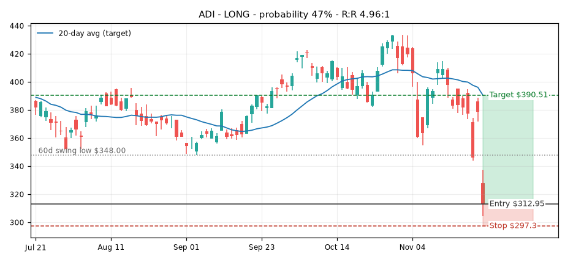
Probability 50% → 20%: broke below 60d swing low (-15); below 200-day avg, downtrend (-8); lower highs and lower lows (-7)
Earlier signals on MU: 2026-11-20: ⏳ still open 2026-11-05: ❌ hit stop -5.0% 2026-11-04: ❌ hit stop -5.6%
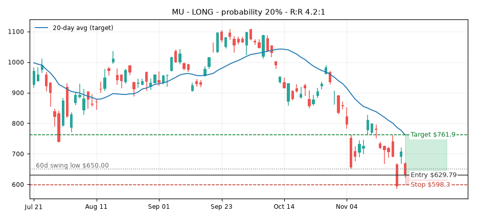
Probability 50% → 43%: lower highs and lower lows (-7)
Earlier signals on P: 2026-11-20: ⏳ still open 2026-11-18: ✅ hit target +13.2%
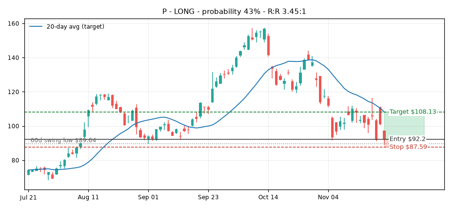
Probability 55% → 47%: below 200-day avg, downtrend (-8)
Earlier signals on TXN: 2026-11-20: ✅ hit target +13.2% 2026-08-25: ❌ hit stop -5.0% 2026-08-24: ⌛ expired +4.3%
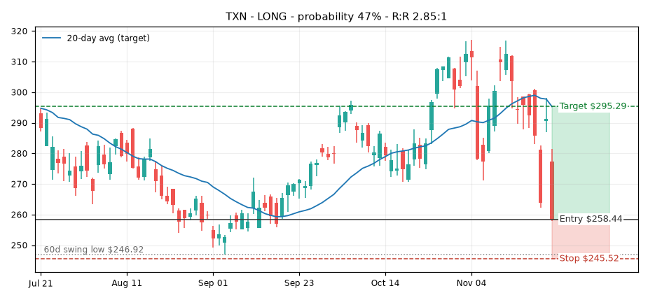
Probability 60% → 30%: broke below 60d swing low (-15); below 200-day avg, downtrend (-8); lower highs and lower lows (-7)
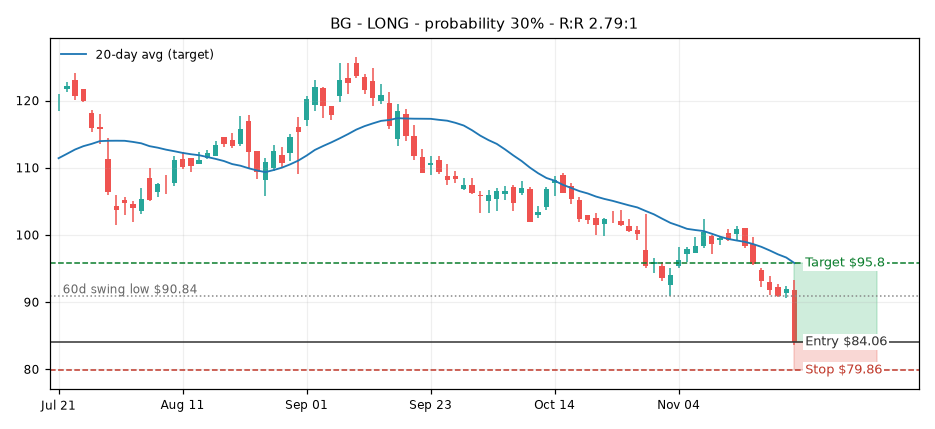
Probability 50% → 20%: broke below 60d swing low (-15); below 200-day avg, downtrend (-8); lower highs and lower lows (-7)
Earlier signals on UNH: 2026-11-19: ⏳ still open 2026-11-18: ❌ hit stop -5.0%
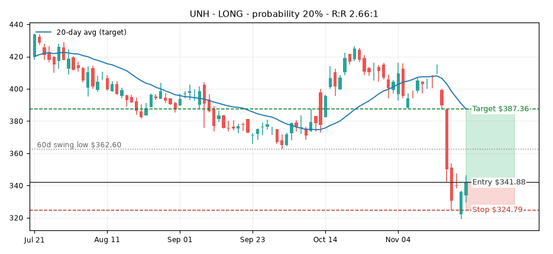
Probability 64% → 49%: below 200-day avg, downtrend (-8); lower highs and lower lows (-7)
Earlier signals on NVDA: 2026-11-20: ⏳ still open 2026-11-19: ❌ hit stop -5.0% 2026-11-17: ❌ hit stop -5.0%
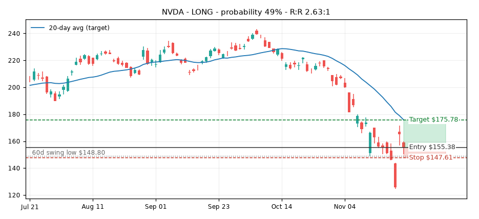
Probability 50% → 20%: broke below 60d swing low (-15); below 200-day avg, downtrend (-8); lower highs and lower lows (-7)
Earlier signals on JBL: 2026-11-20: ⏳ still open 2026-11-05: ❌ hit stop -5.0% 2026-11-04: ❌ hit stop -5.0%
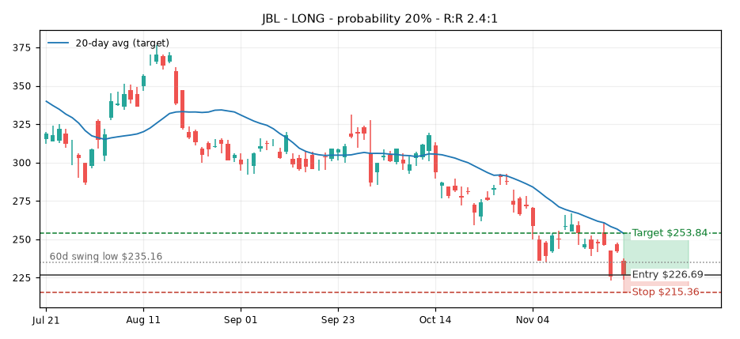
Probability 80% → 73%: lower highs and lower lows (-7)
Earlier signals on MPC: 2026-11-19: ❌ hit stop -5.0% 2026-11-04: ❌ hit stop -5.0% 2026-08-25: ❌ hit stop -5.5%

Probability 50% → 20%: broke below 60d swing low (-15); below 200-day avg, downtrend (-8); lower highs and lower lows (-7)
Earlier signals on GEV: 2026-11-20: ⏳ still open 2026-11-05: ❌ hit stop -5.0% 2026-10-23: ❌ hit stop -5.0%
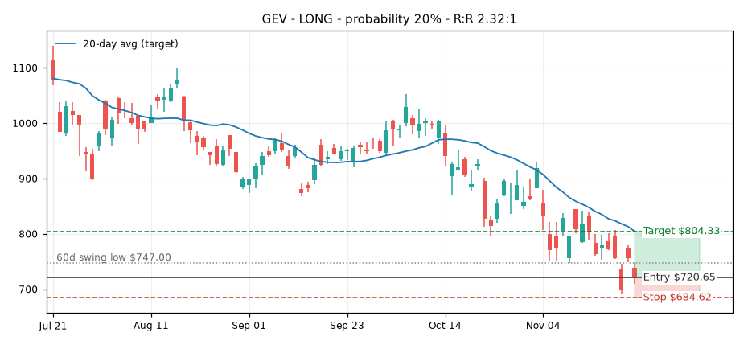
Probability 50% → 35%: below 200-day avg, downtrend (-8); lower highs and lower lows (-7)
Earlier signals on LRCX: 2026-11-05: ⏳ still open 2026-11-04: ❌ hit stop -5.6% 2026-11-03: ❌ hit stop -9.1%
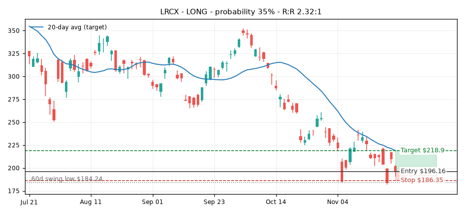
Probability 83% → 61%: broke below 60d swing low (-15); lower highs and lower lows (-7)
Earlier signals on VLO: 2026-11-06: ❌ hit stop -5.0% 2026-11-04: ❌ hit stop -5.0% 2026-11-02: ❌ hit stop -5.0%

Probability 50% → 27%: broke below 60d swing low (-15); below 200-day avg, downtrend (-8)
Earlier signals on NEM: 2026-08-28: ✅ hit target +11.4% 2026-08-27: ⌛ expired +7.7% 2026-08-25: ⌛ expired +8.6%

Probability 50% → 35%: below 200-day avg, downtrend (-8); lower highs and lower lows (-7)
Earlier signals on KLAC: 2026-11-20: ✅ hit target +17.9% 2026-11-05: ✅ hit target +23.0% 2026-11-04: ❌ hit stop -5.0%
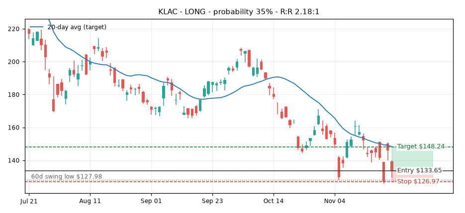
Probability 50% → 43%: lower highs and lower lows (-7)
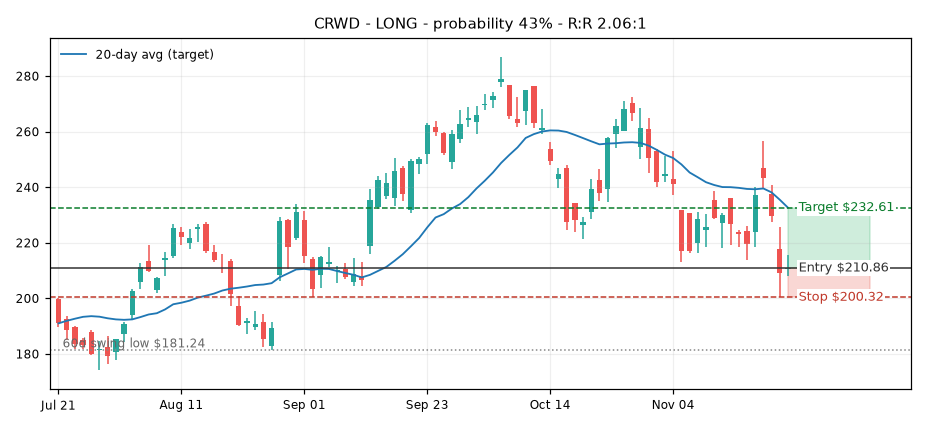